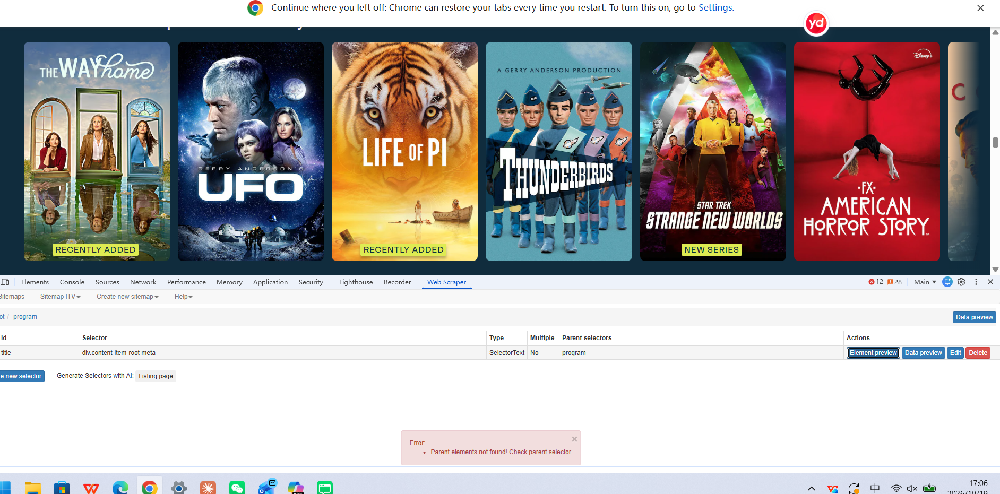

Digital practice/critical reflection/everyweek digital experiences/
Week 1
This week, I learned that technology does not develop separately from society. Society influences how technology is designed and used, and technology also affects people’s lives.
I used to think that the effects of new technology were inevitable. Now I ask more questions: Who designed and controls it? Who does it help, and who might it leave out? This has helped me think more critically about digital media and AI.
week 2（workshop）
What I did
This week’s workshop introduced two ways of building a portfolio website: CampusPress and GitHub Pages. With CampusPress, I named my site, chose a template and a theme that controls its structure, design and appearance, then added content through posts or pages. With GitHub, I wrote an HTML file for the structure and a CSS file for the style, uploaded them to a repository, and used the Pages settings to generate a link so that others could visit the site.
Comparing the two methods
CampusPress has a lower threshold and is easier to get started with. For example, when changing some of the site’s visual settings, I could edit while looking at the page itself, with a clear template and the effect of my changes visible. With a website generated through GitHub, making similar visual changes meant editing the HTML and CSS files in VS Code and then uploading the files to GitHub again before I could see the result
In CampusPress, the underlying code of a web page is hidden, whereas in GitHub I can open the files and see it. CampusPress made it easy for me to overlook the underlying logic of web pages, so my understanding of web design stayed at the level of surface appearance. If I had not used GitHub, I might never have known what HTML and CSS are, or what they do. For example, when using CampusPress, I did not actively come into contact with HTML or CSS, because the structure and style of the site were already preset, and I only needed to choose a theme I liked, the text, the colours and so on. When I generated a website with GitHub, changing parameters in VS Code became, for me, a more systematic and more complicated undertaking.
Both methods had me working within different presets, but there are differences between them. At first, I thought CampusPress would give me a sense of achievement more easily, because I could easily create a clear and harmonious page structure. However, the sense of achievement behind it came mostly from programs that had already been written and from ready-made templates. Now I think that, although GitHub let me see the structure of a web page, most of the code I wrote was typed in following the workshop materials, or came from the template downloaded from HTML5 UP, so my understanding and sense of achievement also partly depend on “ready-made things”. In addition, GitHub has rules of its own, such as needing an index.html in the root directory and having to switch on Pages in Settings in the specified way. So, with CampusPress’s presets, I can choose and use them, but I cannot necessarily open or see them. With GitHub’s presets, I can open and change them, but I also have to take responsibility myself, and if I get something wrong, the website breaks.
Difficulties I encountered
The first time I changed the background and font colours in the editor, it went smoothly, but the second change did not take effect: I could not see the colour from my second change on GitHub. I eventually found that the reason was that I had only changed the file on my computer and had not uploaded it again, so the online version had not changed. This made me realise that, when building a website with code, the local files and the online website are two separate versions, and I need to manage their synchronisation myself, whereas in CampusPress changes happen directly in the back end.
Not only does updating files affect how the website actually looks; the level at which files are placed also determines whether HTML can find them. When I first put the template downloaded from HTML5 UP into GitHub, I did not upload the assets and images folders. As a result, only the page itself would open on my website, with no styling, just plain text and blue links. I opened index.html and saw href="assets/css/main.css", then compared it with the file structure and uploaded the missing assets and images folders. The second time, I dragged the whole folder into GitHub. index.html ended up inside a subfolder, so it was not in the root directory. GitHub Pages could not find the home page and showed the README instead, so the page displayed only the repository name and a short description. I then moved index.html and the folders into the root directory of the repository.Afterwards, I realised that HTML uses paths to find CSS and image files, and the folder levels must match those paths, otherwise the files cannot be found. A web page is not “one thing” but many files connected by paths. In CampusPress, this layer of relationships is managed by the platform.
Link to reading
Gillespie (2014) argues that insight into how systems work is a form of power, and that not everyone has the same access to their “backstage”. He is writing about the criteria used by algorithms, which are often kept hidden for commercial reasons, whereas CampusPress hides its code mainly to make the tool easier to use, so the two situations are not the same. However, his idea that access to the backstage is unequal still helps me think about my own experience. CampusPress let me choose only from preset themes, while GitHub let me open and change the files but also made me responsible for them. In both cases, the platform shaped what I could see and what I could change. This meant that my understanding of web design depended on how much of the “backstage” each platform allowed me to reach.
When the styling disappeared, I realised that a website depends on relationships between files that are not always visible to the user. CampusPress manages many of these relationships for me, while GitHub makes me responsible for them. This showed me that platforms shape not only how easy a tool is to use, but also what parts of the technology I can see, learn and control. Using a tool smoothly does not mean I understand how it works.
Week 3（workshop）
What I did
This week, I learned two ways to scrape website data: using the Web Scraper browser extension and using Python.
At first, I had trouble setting the selectors because the scraper could not find the parent elements. After checking and adjusting the selectors, I solved the problem and collected the titles.
I learned that web scraping depends on the structure of a website. Even when the information is visible, the scraper needs the correct selectors to find it. This made me think about how the data we collect depends on how a website is organised. In future, I will check the selectors with the preview tools before scraping.

Week 4（workshop）
What we learned
This scraping exercise made me realise that data is “framed”. the platforms, subreddits,keywords and time range we choose determine whtat we able to see. We first searched Bluesky for posts from the past month using”chatGPT” and “univeisity essay” and found only 2 posts, which showed that our keywords and time range were too restrictive. In our first Ressit collection, we did not set a search keyword and only entered “uniuk” as keyword. The tool stilled returned 101 records,but these were simply the most recent posts in the subreddit and had little to do with AI. This shows that the tool does not warn whether the data is relevant; judging relevance is the responsibility of researcher. We then used the name of four AI tools( chatGPT, Claude,Gemini and Deepseek) as keywords, collected one dataset for each, merged the four datasets, and selected 31 posts for coding. These attempts showed me that when keywords are too narrow, there is not enough data, and when no keyword is set, the data is irrelevant. Each adjustment changed what we able to “see”, so date is not neutral material waiting to be collected; it is shaped by our choices.
The process of turning text into numbers is subjective, and its validity is limited. We ended up collecting 64 posts relevant to our topic, but only 18 of them could be fully coded using the variables we had set. This is because we designed the variables in advance, whereas the people posting did not write according to our variables: many posts did not mention the tool or the context of use, so they could only be coded as “not stated” or were excluded. This means our coding frame could not accommodate all of the data.
In addition, judging the variables was itself subjective. For example, whether a post is “positive” or “neutral” may be judged differently by different people. The design of the coding table is also a choice: the categories we set determine which phenomena can be seen and which are put into “other” or “not stated”.
Limitations of web scraping
The data obtained through web scraping is limited. Only people who are willing to post publicly online appear in the data. Silent students, students who do not use these platforms, and students who are unwilling to talk publicly about their use of AI will not be seen.
The second limitation is platform bias. Our data comes from r/uniuk, a general subreddit for university students in the UK, where posters come from all disciplines and topics are not limited to study. Posts usually contain no information about the poster’s discipline or year of study, so we could not confirm whether a poster was an arts student. Moreover, a post is only a few sentences long, so in many cases we could only guess when coding. Therefore, the data can only reflect the views of university students who post in this subreddit, and cannot represent students in the Faculty of Arts.
The last limitation concerns the tools themselves. With the keywords and time range we used, Bluesky returned very few relevant posts, and the search tool could not filter posters by discipline or university. As a result, what we were able to collect depended largely on what happened to be on the platform.
Ethical issues
We recognise that although these posts were published publicly, the posters did not know their content would be used for research, and many posts involve concerns about academic misconduct or personal circumstances (such as health conditions), which makes them sensitive. For this reason, we did not keep any usernames, links or original post text in our table. Instead, we summarised and rewrote each post and used ID numbers in place of identities. In our analysis we mainly used numerical codes and did not quote the original text. However, we still retained the sensitive experiences expressed in these posts. This means that, even with identifying information removed, we used their experiences without their consent, which is an ethical problem this method cannot fully resolve.
Data collection also involves issues of power. When organising the data, we were in effect defining students’ experiences on their behalf: we decided which parts of a post to keep and which to leave out, and we decided which context of use it belonged to and what level of trust it showed. A student may have written a complex account of their feelings, which in our table became only a few numbers. The students who posted did not know they were being studied and had no chance to correct our interpretations. For example, we may have judged that a post expressed concern, while the poster might not see it that way. At the same time, whether a post could be collected depended on the settings of the platform and the tool, not on the students’ own choice. This reminds us that data may look objective, but behind it lie the judgements and choices of the researchers.
If we had more time
If we had more time, we would make improvements in several ways. First, we would add other data sources, such as student newspapers, university reports and students’ union accounts. These are published for a public audience and their authors know they will be read and cited, so they are ethically more straightforward and also easier to reference. Second, we would add methods such as questionnaires or interviews, so that we could hear directly from students and fill in the context that online data lacks. Of course, these methods also require informing participants and obtaining their consent, and usually ethical approval. Third, before formal collection, we would test keywords on a small sample, to avoid what happened to us this time, when overly strict keywords, or no keywords at all, gave us too little or irrelevant data. Finally, several members would code the same set of posts independently to check whether the coding is consistent. Where it is not, the differences can help us revise the coding table and reduce the effect of subjective judgement.
Week 5
The choice of Audience
Choosing the audience also exposed a tension in our project. We designed the visualization for university teaching staff and those responsible for academic integrity and AI policy, because they are in a position to respond to the most prominent finding in the data: students fear being found to have violated academic integrity rules. Following the workshop’s recommendation to work backward from “what the audience should think, feel, or do” (O’Halloran, 2014, as cited in Feigenbaum and Alamalhodaei, 2020, p. 21), we hoped they would recognize that students’ concerns about AI are not primarily about whether the tools are easy to use, but about the fear of being found to have violated academic integrity rules; that this anxiety is real, and that some students are not trying to cheat but are simply unclear about the rules; and that, in terms of action, they would explain the rules for using AI, disclosure requirements, and detection procedures more clearly, and be willing to learn more about students’ actual circumstances, rather than directly revising policy on this basis.
what we did
In our sample, nearly half of the posts were most concerned about violating academic integrity policies (Figure 1).
AI was most often used for drafting and polishing, the use most likely to be controversial (Figure 2).
Posts with policy concerns had lower trustworthiness; posts with no obvious barriers had higher trustworthiness (Figure 3).
A simple bar chart with a conclusive title looks authoritative, even though it is based on a small sample. This sense of authority partly comes from convention: such charts rely on mainstream graphical conventions that have been in circulation for a long time, and audiences have long been trained to read them (Feigenbaum and Alamalhodaei, 2020). We mitigated these risks in several ways: Figure 2 uses counts rather than percentages, each title and figure caption states n = 31, and the findings are described as “our sample.” Even so, the choice of title was still ours: several posts simply said AI was useful, but we highlighted policy anxiety because it resonated with the audience. This echoes Feigenbaum and Alamalhodaei’s (2020) point that visualization should not be merely the final step of “making information pretty,” but should, like other parts of data storytelling, be reflective and critical, asking which positions are foregrounded and who or what is left out. In our project, what was foregrounded were students posting anxiously on public forums; what was left out were silent students and students who did not use the platform. Thus, our chart is not a neutral window into student experiences, but an argument shaped by what we collected, how we coded it, and what we highlighted.
Limitations
Our data also have clear limitations in terms of objectivity. Feigenbaum and Alamalhodaei (2020) emphasize that visualizations are meaningful only when we understand the context, background, and potential biases of the dataset. First, students who did not post are entirely absent from the data, including students who do not use Reddit and those who are unwilling to discuss their use of AI publicly. Moreover, many posts are themselves requests for help, such as asking “what are the consequences?” or “what should I do?” People are more likely to post for help when they are worried, so the anxiety reflected in the data may be greater than what students actually experience. This is a reasonable inference, not a proven conclusion. Second, only six of the 31 posts make the discipline identifiable, so the data cannot answer our original question about the humanities and arts students of interest in the workshop context. Third, the sample is very small, with some categories containing only two posts (for example, “lack of depth” and “other” under barriers). With such small numbers, adding or removing a single post can change the appearance of the chart, so no reliable patterns can be drawn from these categories. These limitations mean that our chart describes the posts we collected and should not be taken as a portrait of how students as a whole use generative AI. Missing data and data bias are precisely among the challenges that data narrators must address with conceptual and practical tools, as Feigenbaum and Alamalhodaei (2020) note.
week 6
What I Did
This workshop prompted me to reconsider, from the perspectives of input, output, and process, how algorithms “understand” our identities. I chose TikTok and Google as examples and followed Sumpter’s (2018) “manual scraping” method: I selected 32 friends, collected each person’s 15 most recent posts, categorized each post into one of 13 categories, and finally plotted a scatter plot using the two categories “outdoors” and “lifestyle.” My core argument is that the platform’s algorithm and my own manual categorization operate in essentially the same way: both start with preset categories and then fit complex people into them. The results can be illuminating, but they are inevitably simplified and do not equal who I am.
Input: How Much the Platform Knows
I requested a download of my personal data from TikTok and waited a full four days. What I received was a large number of folders: Likes and Favorites, Comments, Direct Messages, Group Chats, Location Reviews, My Activity, My Videos, and so on. I was shocked that a platform could organize my behavior in such fine detail.
However, I barely use TikTok, so when I opened the files, I found that many were only about 1 KB and contained very little content. But folders such as “Income+ Wallet,” “TikTok Shop,” and “TikTok Live” still existed. This shows that the platform designs its data structure around an imagined user: a creator who posts content, a buyer who shops, and a streamer who goes live. Whether or not I use the platform in these ways, my data are placed into this classification system. As Cheney-Lippold (2017) puts it: “In a distant database, you are assigned a gender, a race, a class, an age, an education level, and perhaps even a parental status with several children.” These categories are defined by others; I do not participate.
The process of obtaining the data itself is also telling. Laws such as the GDPR and China’s Personal Information Protection Law grant users the right to access their own data, but in practice I had to find the entry point myself, submit a request, and wait four days. Having a right in law does not mean it can be easily exercised in practice.
Output: Google Labels Me as Male
When I checked Google’s ad settings, I found that it had labeled my gender as male, even though I am female. I have never filled in any personal information in my Google account, and the page itself states that this information is based on data “you have shared or that have been inferred.” So this label is an algorithmic inference.
cI think two points are important. First, Cheney-Lippold (2017) asks how arrogant it is that categories such as race can be authoritatively assigned even when “no one is willing to ask.” My experience is a small example: I did not participate, nor did I consent, yet I was given a label that does not fit me. Second, when discussing Kosinski’s research, Sumpter (2018) points out that each “like” provides only “a little bit of information about a person,” and that a large accumulation is needed to draw reliable conclusions. I barely use these services, so Google has very little data about me, yet it still gave me a definite gender label without indicating any uncertainty. By contrast, the “industry” field in the settings says “insufficient information.” The platform admits it does not know in some places, but in others it does not hesitate.
Such labels can also have real-world consequences. Sumpter (2018) describes an experiment by Datta et al.: simulated users with similar browsing histories saw different ads depending on their gender; users set as “male” were more likely to see ads for high-paying executive positions. I cannot say that something similar happened to me, but it shows that a gender label that does not match me could change what I see and what opportunities I see.
Finally, ad settings are meant to help users understand how their data is used, but they only show the outcome (a label), not the reasoning behind it. I still do not know which of my behaviors led the algorithm to classify me as male. The black box remains closed.
The Process: The Choices I Made When Categorizing My Friends
The 32 friends I selected were people I interacted with more often on social media. This introduced a bias: most of them were women, and they all came from circles I knew well. I later realized that selecting people based on the amount of interaction is very similar to the logic platforms use to decide what content to show us, so my data was not neutral from the start.
Posts that were hard to classify. Selfies, and posts that belonged to multiple categories at once, were the hardest to handle. I classified selfies as lifestyle; when a post contained multiple themes, I chose the one that felt most appropriate. Throughout the process, I kept feeling that people should not be confined to 13 categories, because people are diverse. Since these decisions were entirely based on my own judgment, my analysis was subjective and lacked objectivity.
Choosing the axes. I chose “outdoors” as the horizontal axis and “lifestyle” as the vertical axis. There are 78 possible pairs of the 13 categories, and I did not compare them one by one. Sumpter (2018) points out that pairwise comparison “is not a particularly systematic method,” so he turned to principal component analysis. The pair I chose was subjectively selected; if I had chosen a different pair, my friends’ “profiles” would have looked different. For example, if I had chosen “music/sports/movies” and “ideas/reflections,” F23 (12 posts in music/sports/movies, 1 post in ideas/reflections) and F16 (0 posts in music/sports/movies, 8 posts in ideas/reflections) would have been at opposite ends of the plot, whereas in my current plot neither of them stands out particularly.
This also shows an important difference between my method and Sumpter’s. His principal component analysis identifies dimensions from the data; he writes, “It is the algorithm, not I, that determines that these are the best dimensions to describe my friends” (Sumpter, 2018). My 13 categories, by contrast, were fixed in advance, and every judgment came from me. This made me realize that the algorithm’s “objectivity” and my subjectivity are not opposed: both are built on assumptions, only the algorithm’s assumptions are harder to see.
What the Data Show
In the plot, many friends have no outdoor posts at all, while their lifestyle posts range from one to twelve. Friends with more outdoor posts (five or more) are F03, F20, F26, and F31, and they have only two to four lifestyle posts. Friends with more lifestyle posts (seven or more) are F08, F13, F15, and F24, and they have zero to two outdoor posts. I set these boundaries myself based on the distribution of the points. The remaining 24 friends mostly had between 0 and 4 outdoor posts and between 1 and 6 lifestyle posts. The top-right corner is empty: no one posted a lot in both categories. The trend that “the more posts in one category, the fewer posts in the other” is partly due to the counting rules: each friend has exactly 15 posts, and each post can be assigned to only one category, so when the number in one category rises, the number in the other must fall. In addition, the “Politics/News” and “Activism” columns are completely empty, and some points in the chart are darker because several friends have exactly the same values.
How accurate are these data?
I think these data can represent my friends’ identities only to a very limited extent, for several reasons.
First, the table records my interpretation of each post, not my friends themselves, nor the full content of the posts. Second, the 13 categories do not adequately cover certain types of content, such as hand-gesture dances and selfies. Third, because each friend has exactly 15 posts and each post can be assigned to only one category, part of the pattern in the chart comes from the rules themselves, not from real differences between people. Fourth, I tend to think that the empty “Politics/News” and “Activism” columns are related to platform censorship, but my data cannot verify this; it is only a hypothesis. Finally, posts are curated self-presentations that show only the parts people are willing to let others see, and the most recent 15 posts are only a very short slice of time.
I also want to add this: when I call some friends “outdoor-oriented” or “lifestyle-oriented,” I am doing exactly what I criticize: reducing people to labels.
Discussion: What is identity?
The strongest takeaway from this exercise is that identity is multiple and changes with context. In the UK, I am an international student from China; at the University of Leeds, I am a postgraduate student in digital media at the School of Media; in my own apartment, I am just a young woman at home. All these identities are me. Cheney-Lippold (2017) says that “we are temporary members of different emerging categories” and that online, “you are rarely ‘you’.” In the eyes of algorithms, we are ourselves, plus layer upon layer of algorithmic identities. My own experience shows that these algorithmic identities are not consistent with one another and may even conflict with how I see myself. Identity is fluid and is constantly produced through our actions.
I also want to return to the darker points in the chart. If several friends have exactly the same numbers across the categories, are they the same kind of person? I do not think so. They may share some things in common, which is consistent with Sumpter’s (2018) finding: his categories do capture real similarities and differences among friends. But similarity is not sameness. Sumpter (2018) also describes how methods such as principal component analysis “represent us as a few different symbols,” and when he showed the results to his friends, Torbjörn did not like being described as “all work and no play.” Cheney-Lippold (2017), citing Rouvroy, points out that algorithmic systems ignore “the individual’s subjective uniqueness, personal psychological motivations or intentions.” So I believe that every person has a living, breathing life and unique experiences that no string of numbers can contain.
Conclusion
Through the three tasks of input, output, and process, I have come to recognize that datafied identities are produced by classification: they can be illuminating, but they are always a simplification and can be wrong. What people display on social media is only the part they want others to see, and a person has different identities in different settings; all of this is real. Therefore, defining a person with a string of brief data is an oversimplification that can have real-world consequences. Having the same numbers across 13 categories does not mean that two people are the same kind of person.


 cI think two points are important. First, Cheney-Lippold (2017) asks how arrogant it is that categories such as race can be authoritatively assigned even when “no one is willing to ask.” My experience is a small example: I did not participate, nor did I consent, yet I was given a label that does not fit me. Second, when discussing Kosinski’s research, Sumpter (2018) points out that each “like” provides only “a little bit of information about a person,” and that a large accumulation is needed to draw reliable conclusions. I barely use these services, so Google has very little data about me, yet it still gave me a definite gender label without indicating any uncertainty. By contrast, the “industry” field in the settings says “insufficient information.” The platform admits it does not know in some places, but in others it does not hesitate.
cI think two points are important. First, Cheney-Lippold (2017) asks how arrogant it is that categories such as race can be authoritatively assigned even when “no one is willing to ask.” My experience is a small example: I did not participate, nor did I consent, yet I was given a label that does not fit me. Second, when discussing Kosinski’s research, Sumpter (2018) points out that each “like” provides only “a little bit of information about a person,” and that a large accumulation is needed to draw reliable conclusions. I barely use these services, so Google has very little data about me, yet it still gave me a definite gender label without indicating any uncertainty. By contrast, the “industry” field in the settings says “insufficient information.” The platform admits it does not know in some places, but in others it does not hesitate.